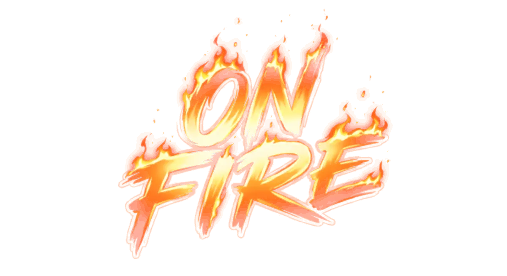
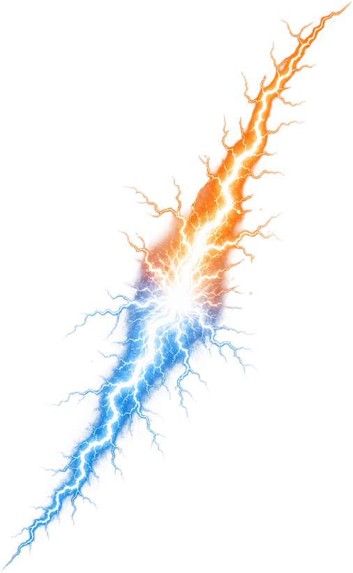
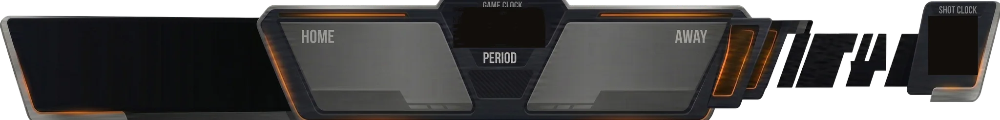
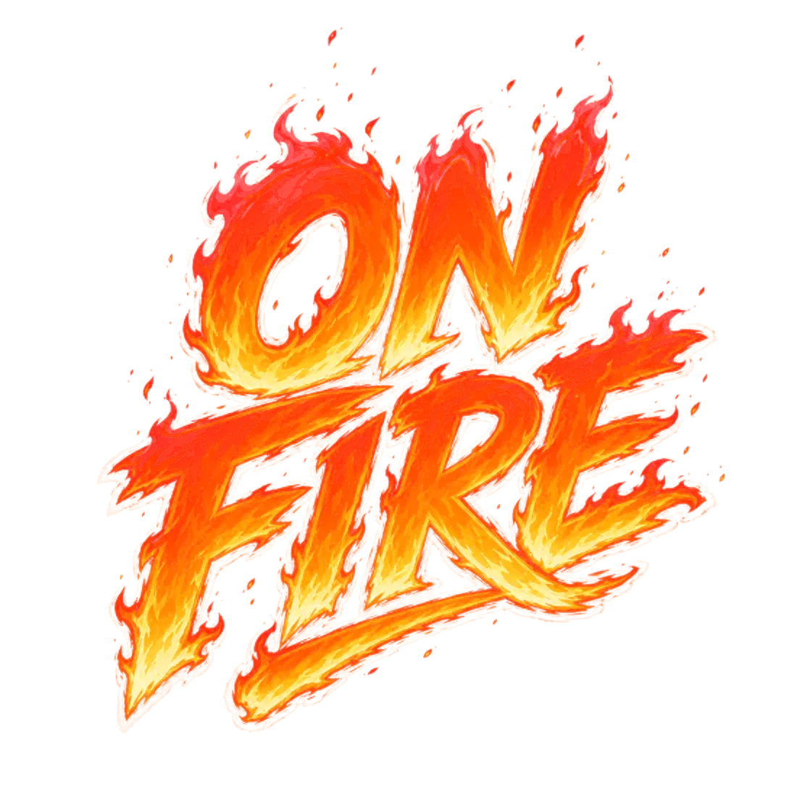
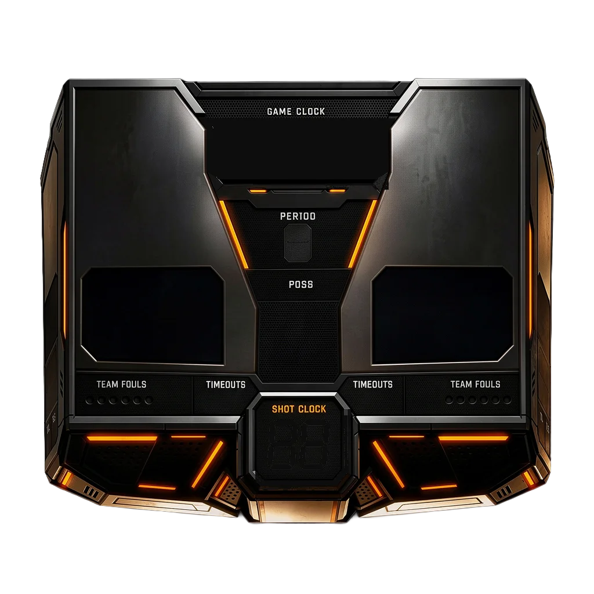

SOONThe Jacketyour run · your room · your reputation
Play somebody
An Aaronautics game · est. 2026
The Rulebook
tap a topic · orange buttons run live drills
Two squads, one truth: your basketball knowledge is your jumpshot. Every drill drops you on a practice court with the Coach: no score, no clock, easy cards.
Tap one of your players to select them, their reachable tiles light up. Tap a tile to move, then Confirm ✓ (nothing fires on a stray thumb). One step a turn is FREE: a player without the ball can move one square and it costs you nothing, your main action is still live. Space the floor, set a screen, cut to the rim. The defense does not answer the free step; they answer your main action. After every main offensive action, the defense slides one player. Every defender guards all eight squares around them. How they guard you sets the price: beat a man head-on and the crossover card is full price; a duel forced by a man covering you from the corner asks an easier question. A lane two defenders stand on is closed, beat them one at a time. Screens still work everywhere, a body beside a defender is a body, diagonals included. First to 11 or 21, or 4 quarters.
Short passes are automatic. Cross-court lasers ask a medium question; full-court heaves are hard, miss the card and it sails out of bounds. Answer right and the pass connects, period, the card IS the risk, there’s no delivery meter to shank. The lane matters: a lurking defender near the lane turns a free swing into a question, and a defender a tile from your handler on the rim side contests every forward pass.
Colour on the floor always means one thing: how hard the question is. Same scale as the card itself, green Easy · amber Medium · red Hard. What the shot is WORTH is the cream three-point line, painted on like a real court: outside it is three, inside it is two. That is why the corners glow amber outside the line, a medium question worth three, the most efficient shot on the floor, exactly like real ball. Move it to the corner. The cream key is drawn too, that is the box the 3-second rule polices. Both lines are traced from the same rules that score the shot, so what you see is what you get. Closer shots ask easier questions. Answer right on an open look and it’s a bucket: straight splash, no meter. On a contested look the release meter pops, and it is pure upside: dead center denies the defender’s block card and rises clean; anywhere else the contest simply plays out on cards. There is no shank. A right answer can never be reflexed into a miss. The meter belongs to the shooter, it shows whose finger it is in their color.
Advancing past a defender lights the tile green, amber or red for how hard the question will be, so you know before you commit: cheaper from the corners, full price head-on. You answer; beat it and they answer to stay in front (guards get easy cards, bigs get brutal ones). Both right = ANKLE BATTLE: sudden-death cards, handler answers second: first miss loses. Carrying it 3+ tiles is a deep cross, a harder question. Win and you land exactly where you chose. Flub yours and the defender must earn the steal with their own card.
Park an off-ball teammate next to a defender, any of the eight squares around them, diagonals count, and that defender is screened: the red lanes they were guarding reopen. Only the ball-handler can’t screen; everyone else can, which means screens happen to you as well as for you. Look at the feet. Every defender wears a ring saying what they are doing: a broken teal ring = screened, drive straight past them · a double red ring = they will contest this shot · an amber ring = drive past them and they force a crossover. Screens win games.
After each offensive action you slide one defender, up to one tile less than their offensive speed (backcourt defenders sprint at full speed). Next to the ball-handler? Hit Go for the steal: your card, then their protect-the-rock card; both right = RIP OR GRIP: sudden-death cards, handler’s edge: first miss loses. Miss yours and the reach burns the slide.
Only a defender between you and the rim contests: no phantom contests from behind. A man in your chest makes the shot a lot harder; a diagonal closeout leaves it cleaner but sharpens their block card (Centers get easier blocks in the paint). A perfect release denies the block card outright, otherwise the blocker gets their say. Shooter AND blocker both right? Battle at the rim, sudden-death cards, rim-protecting bigs get the edge on layups.
Misses are live. Bodies near the rim battle for the board with sudden-death cards, closest player gets the box-out edge (answers second), and the first miss loses the glass. Nobody crashing? Long rebound, out of bounds, other team’s ball.
Made buckets get inbounded under the rim like real ball: no teleports. The inbounder can’t move or shoot; you may set up ONE cutter first (the defense gets a slide to answer), then tap a teammate to put it in play.
The room picks a level, Casual · Rookie · Baller · Pro · Legend, or Surprise Me (fresh roll every card). It slides how hard EVERY question is. A handicap room lets each player set their own, so mixed crews stay close. Ball knowledge is the jumpshot.
Every game opens with a general-knowledge toss-up: first buzz answers, and the winner takes THE CALL (+2 shuffles or first pick; winner also suits up first). The ball itself is earned at the jump ball: question pops, slap your zone first, answer for possession.

Win cards, catch fire. Every card your squad wins pours heat into the bar under your score, easy cards drip, hard cards pour, and the team that’s behind pours a little faster. Miss a card and you lose one quarter of the bar, never the whole thing, so a cold streak never wipes you out. The bar looks hotter every quarter it fills, and when it’s full you are ON FIRE. What being ON FIRE gives you: every question your squad answers gets one step easier, and every one of your players moves one tile further. Your ball-handler burns, the ball burns, your teammates carry embers. What puts it out:any made basket, yours cashes it in, theirs snuffs it, or losing the ball while you’re lit. Then the bar empties and you start climbing again. Heat never multiplies your points: it makes you better, not your buckets bigger.
Backcourt: once the ball crosses half, going back is a live violation, dark-red warning tiles, whistle if you commit. Three in the key: camp inside the painted key for 3 of your actions and it’s a turnover (warning at 2), it counts your actions, not seconds, and the key is the cream box drawn on the floor. Clocks::24 to commit on offense,:12 to slide on defense (paused during cards and battles). Sudden death: tie at game point freezes the board, alternating cards, first clean hit-vs-miss ends it.
Main menu → Online (you need an access code). One of you creates a room, texts the 4-letter code. You only see your own cards, your opponent just sees you sweating. Drop mid-game and the room holds ~45 seconds with a Reconnect button; even a full refresh offers to jump you back in. The first connect of the day can take up to 30 seconds.
Drag rotates the court, pinch zooms, tap still selects. Tile coordinates run the edges so you can call shots like a chess player. Tapping a player leans the camera in; empty court pulls back. The ↺ replays the last move, for when your opponent swears they didn’t see it.
The ⚙ controls theme, music, SFX, court labels, motion, and the Coach. Your settings stay on this phone. During play, one tap on the ♪ in the corner stops or restarts the music; pause the game and the same ♪ opens the full player. The soundtrack follows the moment, a song for the menu, one for live play, one for a drill, one for the pause, and two more for the final buzzer depending on how it went. Prefer your own? Skip to any of the eight in the player and it stays put until you toggle ♪ off and back on. Music: Ketsa (ketsa.uk), album Concrete Flowers, CC BY 4.0. Shot-clock font: DSEG7 (keshikan), SIL OFL.
,
The Daily Five
Your rim now · five stops to make
:25
0daysin a row
·
SMTWTFS
played
swept 10
all 11
on the day
caught up
·
…
Settings
Control room
Theme
Hardwood
◀ flick or swipedrag or use the arrow keys ▶
Audio
Music
5 tracks · spin 'em on the boombox
Sound FX
Coach
first-time tips during games
Run the Coach again
each tip shows once · this brings them all back
Table
Court labels
letters and numbers around the floor · off by default
Reduce motion
calms animations
Trash talk
the other side speaks up on big plays · off is full silence
🎧 Want your OWN playlist? Turn Music OFF, start your music app (Spotify, Apple Music, anything), then come back: it keeps playing under the game.
Online · Friend codes · alpha
Run it remote
one of you starts a room · the other joins with the code
Private run · test group
The Guest List
This run is invite-only. Enter the access code Aaron sent you · the bouncer checks the list.
✓ ON THE LIST
You'll be Orange
Start a Room
Kick it off, then send the link. Your friend taps it and they are in, nothing to type. You're the home team.
You'll be Blue
Join a Room
Got a link? Just tap it. Got a code instead? Punch it in and you're on the floor.
Your room code, if they'd rather type it
· · · ·
Waiting for your friend to join...
Step 1 · Pick your world
Choose a League
Quick picks
Or pick your own
Versus · the opening bell
The Toss-Up
who sets up the game? knowledge decides, not a coin flip
How it works
A general ball-knowledge question is coming, same for both of you.
On 5·4·3·2·1 it pops up. Slap your buzzer the second you know it.
First to buzz answers. Right = you win THE CALL. Miss it and it's your friend's.
this is your warm-up, the tip-off for the ball works the exact same way
● OrangeBlue ●
General · Ball Knowledge
…
Buzz!
Slap your buzzer the second you know it.
Orange won the toss-up
You've got the Call!
pick your prize. Your friend gets the other
Two more
reshuffle your five
7 shuffles instead of 5
Better odds at a loaded pack
But they pick first
First pick
take the board first
Lock your squad first
Best of the pool, uncontested
They shuffle 5, same as you
tap one · it slams · your friend gets the other
5
get ready…
Step 2 · Pick your era
Pick an era
tap the timeline, mix any decades
Step 3 · Meet your squad
Your Starting Five
tap a card for full stats
Step 3 · Vs the machine
Locker Room
Your floor. Your colors. The machine dresses to contrast.
Step 4 · House rules
Game format
Knowledge level
House rules · Set the scene
Home Court
Same game, twelve looks. Every court has an A and a B.
Your home courtClassic Run
Local VS · Squads first
Claim your names
Squad one · holds the phone first
Saved squad · tap to change
Squad two · pass them the phone
Your names ride the whole night, the toss-up, the scoreboard, the victory slam. Colors come after the tip.
House rules · Suit up
Team Colors
24 colorways, NBA, WNBA, FIBA and BIG3, overlaps collapsed.
Your colorsOrange
Online · Joining a room
Before you hop in
Orange's room
You'll be Blue
Nothing here changes once you're in.
Handicap
Pick your level
What you'll face
Squad check
Meet your squad
You are ORANGE
tap a player for full stats
Tonight's matchup
Squad VS Squad

Orange
Blue
VS
Tip-off incoming…
:24
BRAINS × BUCKETS
This is a battle of wits, on the court. Brains and athleticism. Bring both.
LACING UP YOUR CEREBELLUM…
TAP ANYWHERE TO SKIP ▸

HOME
0
88:8800:00
81
0
AWAY
8824
First to 11
Heads up. Tap one of your players.
:24
Tap a player to start


B
K
88:8800:00
81
HOME0
AWAY0
8824
Category
Hard · 3 pts
Tap to flip
Hard3 points
…
:15
Release!
Tap to lock it in
Orange0TAP! TAP! TAP!
Crash the boards!
Off the iron, who wants it more?
Blue0TAP! TAP! TAP!
Vs CPU · pick your poison
Who are you facing?
Timeout!
the clock is stopped, huddle up
OrangeSlap to buzz in
Jump Ball!
5
First to buzz answers for the ball
BlueSlap to buzz in
Skip remaining tips?
You can reference the rulebook in the pause menu or turn coach back on.